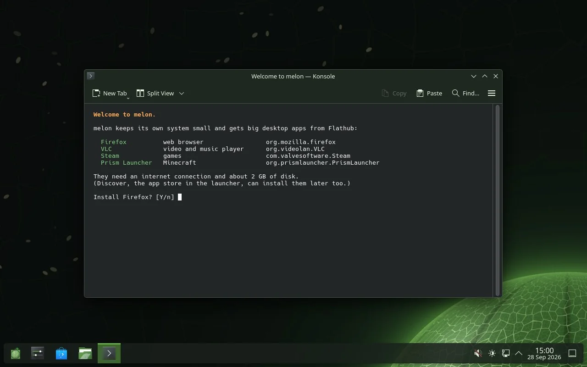
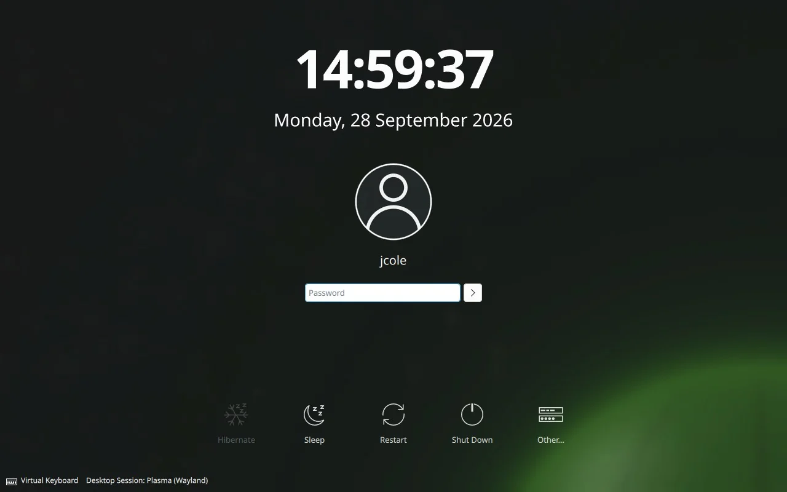
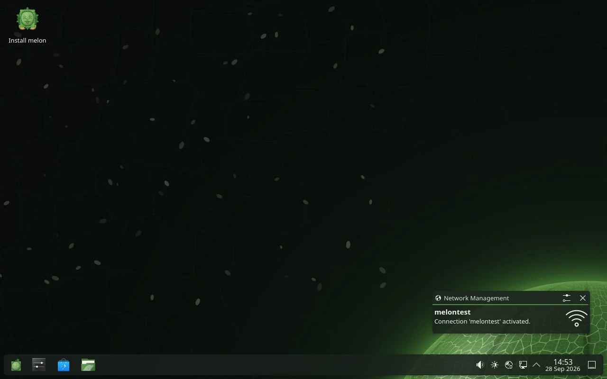

melon 0.2 “Bailan” · 29 September 2026 · x86_64
A Linux you can read end to end.
melon is a distribution made from scratch. The C library, the compiler, the kernel, even KDE Plasma are compiled from upstream source by scripts that live in one git repository, then signed and shipped as small apk packages.
you@melon m e l o n ─────────────────── os melon x86_64 kernel Linux 7.0 init runit libc musl 1.2.5 pkgs apk 3 shell bash 5.3 desktop Plasma 6.6 badge ★ survivor
melonfetch shows, give or take. That is its own melon, redrawn here pixel for pixel.no systemd musl, not glibc BIOS and UEFI dual boots with Windows
01 What you get
- from source
- Every package is cross-compiled from the project’s own release by a recipe in the repository: more than 400 of them.
The packages are signed, and
doas apk upgradekeeps a rolling system current. - small parts
- musl instead of glibc, BusyBox, runit instead of systemd. A service is a few lines of shell that you can open and read.
- a real desktop
- KDE Plasma 6.6 on Wayland with melon’s own look: login screen, boot menu, Plasma style, Konsole colours, lock screen. On first login it offers Firefox, VLC, Steam and Prism Launcher from Flathub, and asks before installing any of them.
- real hardware
- Touchpads, Wi-Fi (Intel, Realtek, MediaTek, Qualcomm), Bluetooth, webcams, USB drives, printers.
If something doesn’t work,
sudo melon-hwreportwrites one file you can attach to an issue. - graphics
- Mesa with LLVM: radeonsi and RADV for AMD, iris and ANV for Intel, nouveau and NVK for NVIDIA, llvmpipe when there is nothing else. NVIDIA’s own driver is an option too.
- disks
- XFS on GPT. One installer question gives you LUKS2 encryption. It also installs next to Windows without touching it and adds Windows to the boot menu.
- tools
- gcc, clang, Go, Rust, cmake, meson, git and QEMU are in the package repository, built for melon. They are not on the ISOs, and the welcome window offers the basic ones.
- games
- Steam through Flatpak, GameMode, SDL3 and melon’s own pinball. More below.
02 It looks like this
Screenshots from melon’s own automated tests, taken in a virtual machine.



03 Which ISO?
-
melon desktopx86_64 · about 837 MB
KDE Plasma on Wayland. A live session you can try first, and the graphical installer. This is the one most people want.
Get it -
melon consolex86_64 · about 396 MB
No desktop: a small system with a quick text installer, for servers, tinkerers and virtual machines.
Get it -
melon 32-biti686 · LXQt
For old netbooks and 32-bit laptops: LXQt on Wayland, with the same installers. Built and tested in QEMU on an emulated Atom N270 with 2 GB. Not published yet, because it still needs a signed build.
coming
Builds are test releases for now. Every file has its checksum on the download page.
04 Installing
- Download the ISO and write it to a USB stick with Rufus, balenaEtcher,
Ventoy or
dd. - Boot from the stick. The live session starts Plasma by itself, so you can try melon before you commit.
- Keeping Windows? Shrink it first in Disk Management (right-click C: → Shrink Volume) and leave at least 20 GB unallocated. melon goes into that space and adds itself to the boot menu. GRUB lists Windows too.
- Double-click Install melon and follow the installer. Then answer a few questions. About two hundred of them. See below.
Needs: a 64-bit Intel or AMD processor, 4 GB of memory (8 GB is better), 20 GB of disk, UEFI or legacy BIOS.
05 The gauntlet
Before melon installs, the installer asks you 200 very easy questions, one per screen, shuffled every time. The Next button waits a few seconds. A wrong answer sends you back ten questions. It is slow on purpose, to put off anyone who is only there for status.
After the last one you can try the final trial: 50 real questions, 90 seconds each, and in the last 20 any mistake restarts the finale.
Walking away still installs melon. Passing earns melon in gold: a gold login screen, colours and boot menu, three survivor wallpapers,
a certificate and a badge in melonfetch.
The page after the questions also has a checkbox that removes everything built with Rust. It has no safeguards, and it earns its own wallpaper.
Try five of them
06 Read a package
This is a whole package: recipes/zlib/MELONBUILD, as it is in the repository. The builder fetches the source, checks its hash,
runs the two functions with the cross compiler, splits out the -dev files, signs the result and adds it to the repository index.
# recipes/zlib/MELONBUILD pkgname=zlib pkgver=1.3.1 pkgdesc="A compression/decompression library" license=Zlib url=https://zlib.net source=(zlib-1.3.1.tar.gz) subpackages=(zlib-dev) build(){ ./configure --prefix=/usr --libdir=/usr/lib --shared; make -j$JOBS; } package(){ make DESTDIR=$pkgdir install; rm -rf $pkgdir/usr/share/man; }
Services are as plain. This one turns on compressed swap in memory (/etc/sv/zram/run), and runit keeps it running:
#!/bin/sh exec 2>&1 modprobe zram 2>/dev/null [ -e /sys/block/zram0/disksize ] || { sleep 3600; exit 0; } if ! grep -q "^/dev/zram0" /proc/swaps; then mem=$(awk "/MemTotal/{print \$2}" /proc/meminfo) echo zstd > /sys/block/zram0/comp_algorithm 2>/dev/null echo $((mem / 2))K > /sys/block/zram0/disksize mkswap /dev/zram0 >/dev/null && swapon -p 100 /dev/zram0 fi exec sleep 2147483647
And on an installed system, packages are one command:
# more software, from melon's signed repository doas apk add gcc g++ make pkgconf doas apk add clang go cmake meson git doas apk add rust cargo ripgrep # keep everything current doas apk upgrade
07 Games
melon pinball is melon’s own pinball game, set on the melon planet, with real ball physics, missions and Harvest runs, in its own repository (melon-pinball). It is on the desktop ISO.
NetHack 5.0 is on both ISOs. Cataclysm: Dark Days Ahead is one command away (doas apk add cataclysm-dda).
Steam, which needs glibc, comes from Flathub. A launcher for melon’s own games is on the way, and the icon above is its.
08 Take one
Download melon 0.2 sizes and checksums
Not sure melon is your distro? Take the 200-question distro finder. It scores more than a hundred Linux distributions, melon included, against your answers.